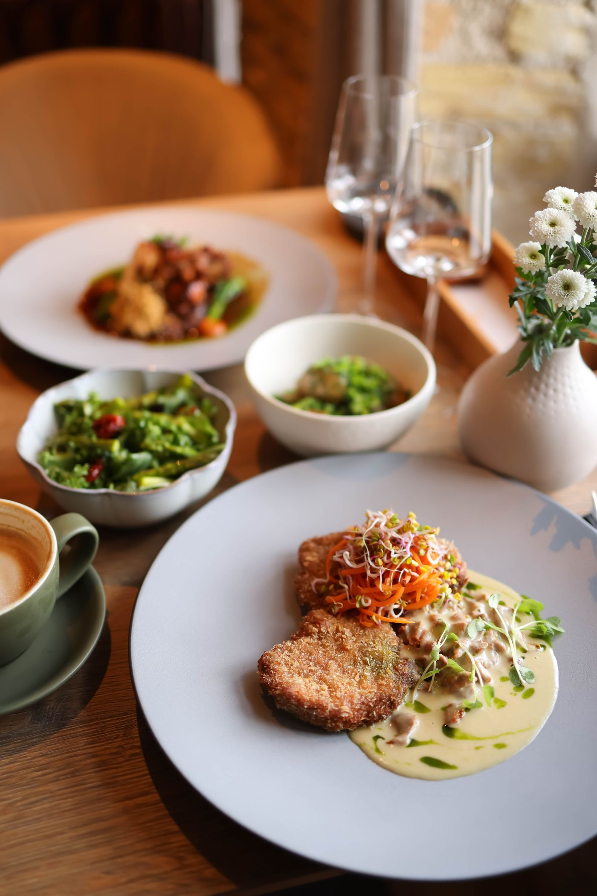

Da cozinha
Uma seção para explicar sua proposta com informações claras e relevantes para quem chega.
Apresente sua cozinha, destaque o cardápio e abra um caminho simples para pedidos e reservas.

Uma seção para explicar sua proposta com informações claras e relevantes para quem chega.
Conte como funciona seu serviço e o que o cliente pode esperar do primeiro contato.
Facilite o próximo passo com orientações e um canal direto para conversar.
Na página final, esta resposta apresentará as informações e condições reais do seu negócio. Aqui demonstramos o espaço para esclarecer dúvidas frequentes.
Sim. Textos, cores, imagens e seções podem ser combinados na proposta com a Solvi.
Converse com a Solvi sobre uma página para o seu negócio, com sua identidade e suas informações.
Quero uma página neste estilo ↗Este modelo não recebe pedidos ou reservas para o negócio fictício. O botão de contato leva à Solvi.